每组从同一位置、同一视角拍摄。点击任一幅画面，即可在新版校园进入该机位。
从东面看南北两端的墙面退进与空中连廊。
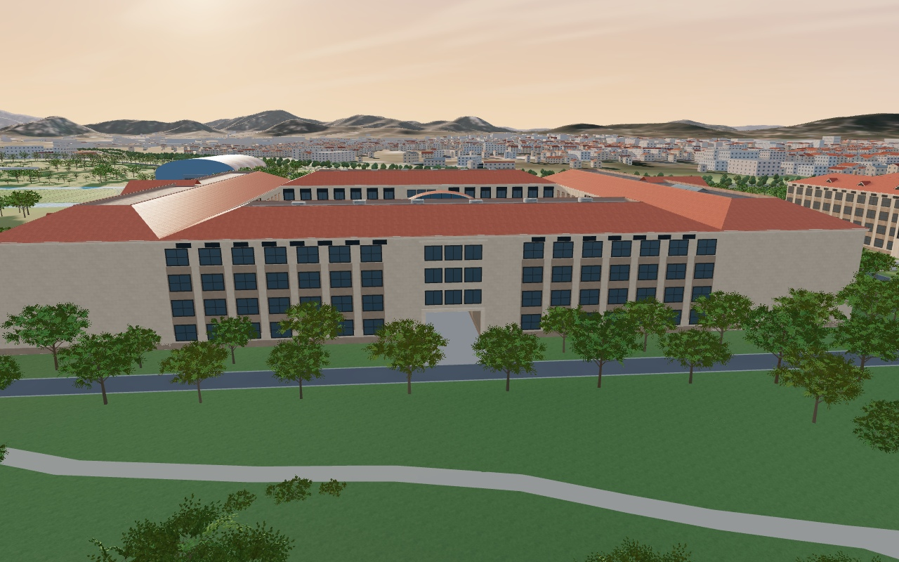
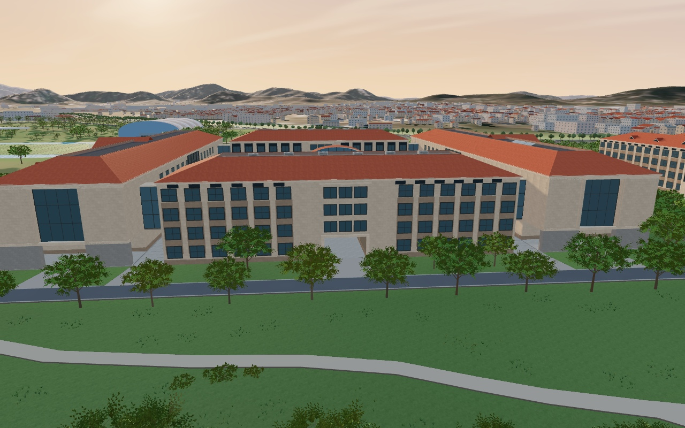
从翼端望进内院，比较底层开口、廊柱和通道尽头的景物。
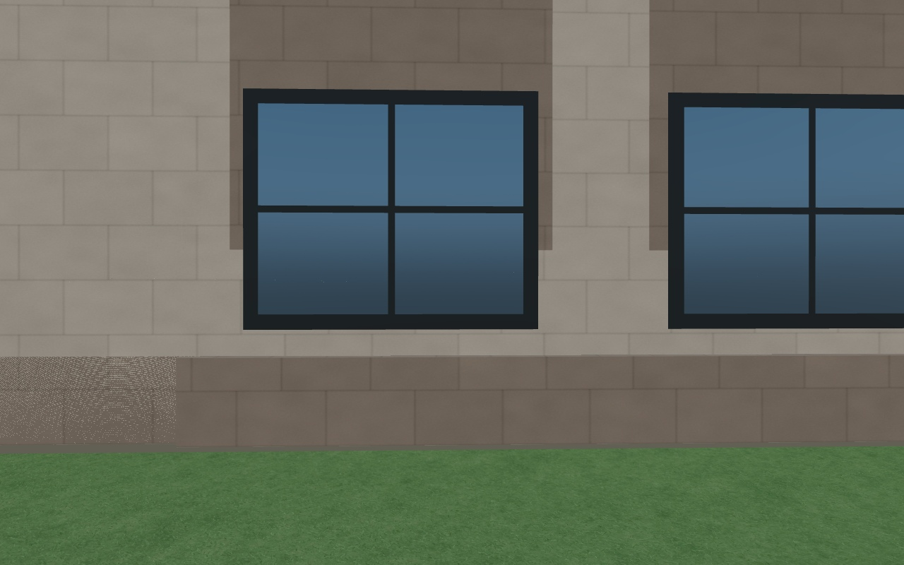
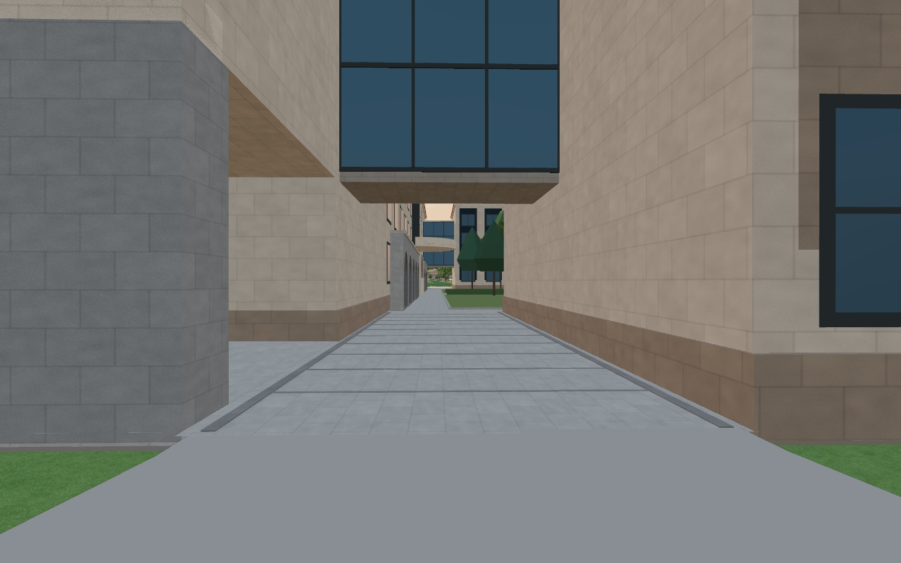
从端楼看方洞和内凹窗，上方屋盖遮住左右两座石墩的顶部。
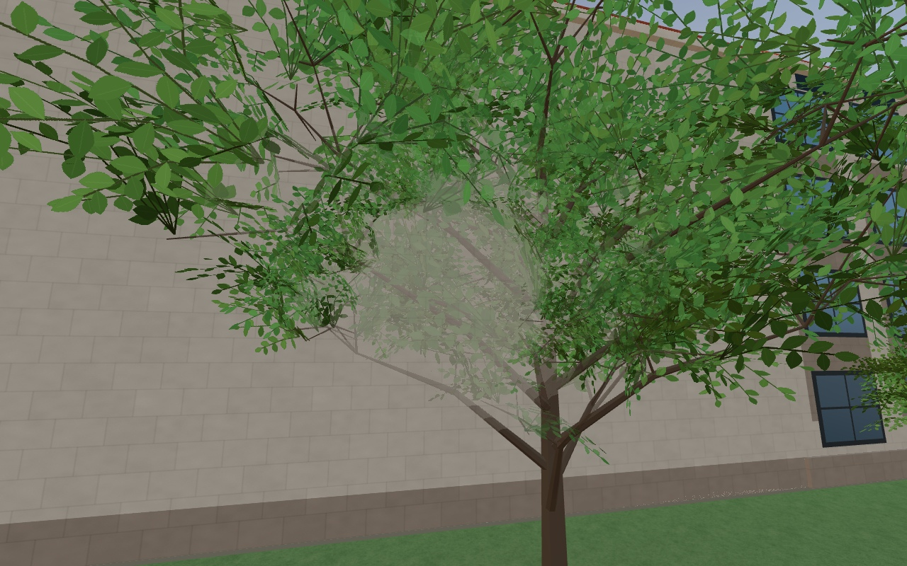
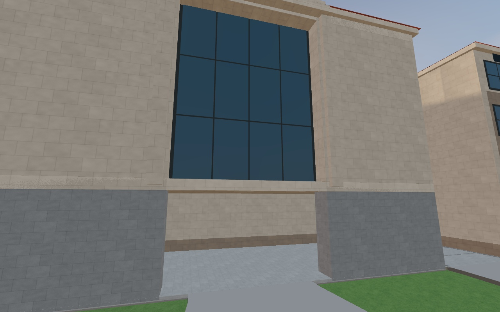
从 C 座侧人行道看樱花树与两栋楼的相对位置。
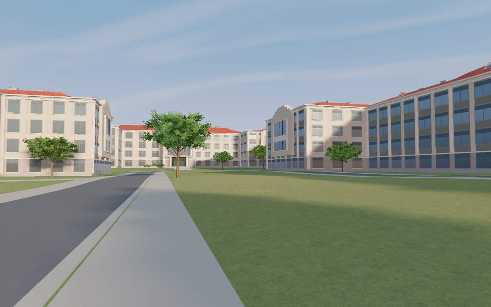
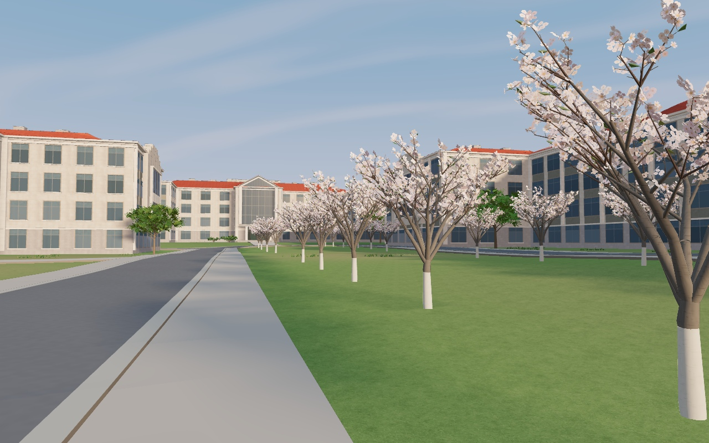
走近枝梢，可看到浅粉白花簇的花心、花瓣和枝条之间的留空。
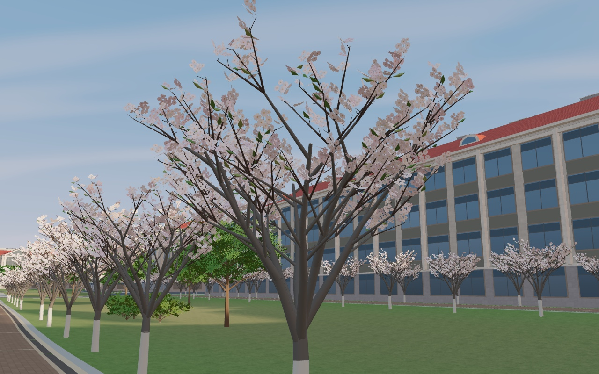
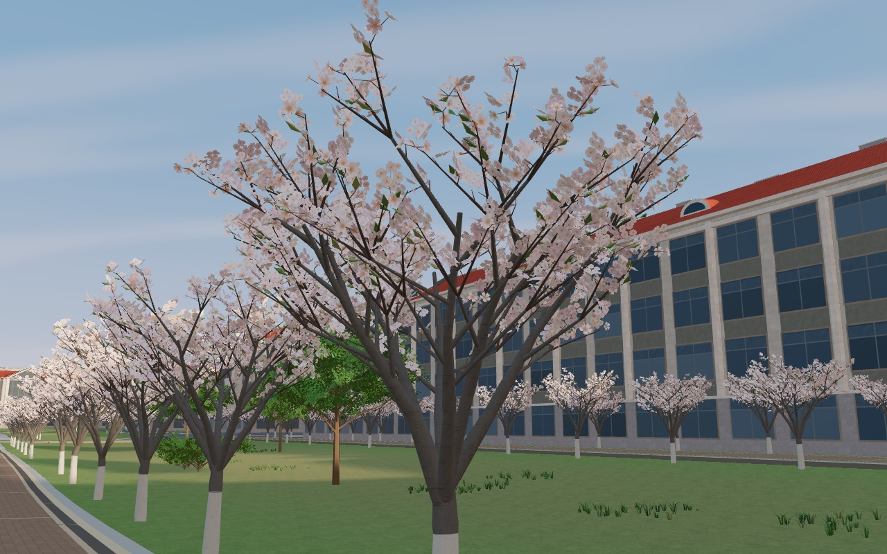
沿矮篱间的路看粉花树冠和近处的花枝。
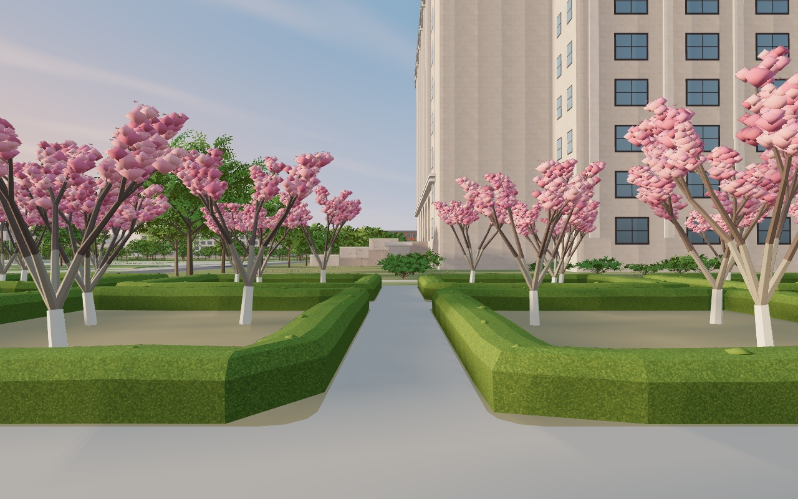
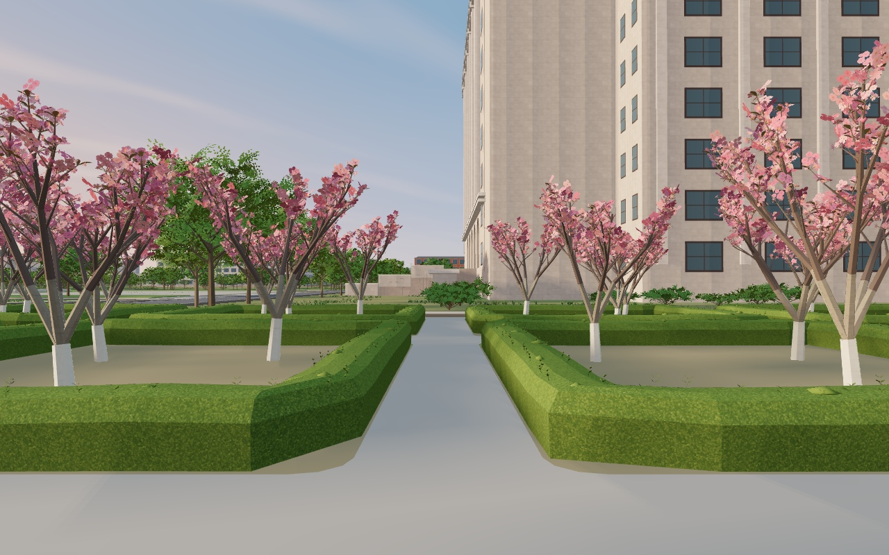
沿坡顶望向下沉车道，比较花丛起伏、土隙和路缘的细草。
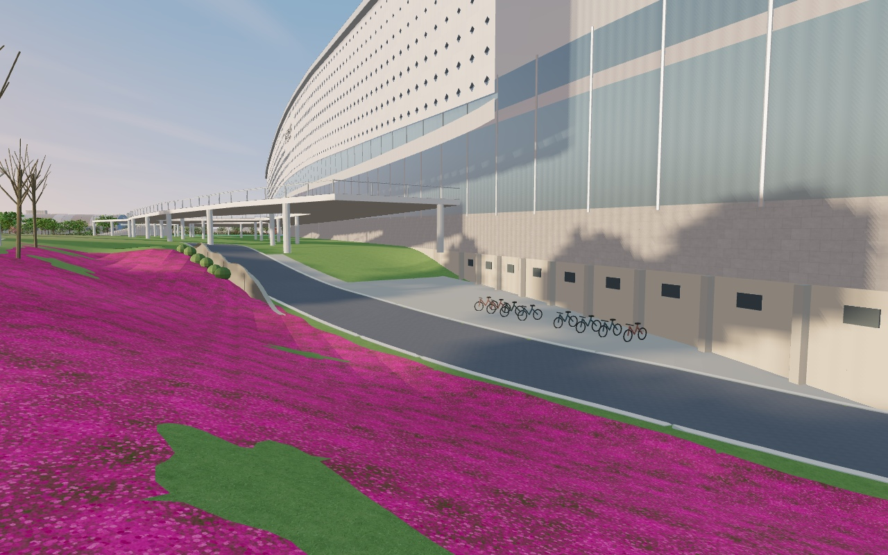
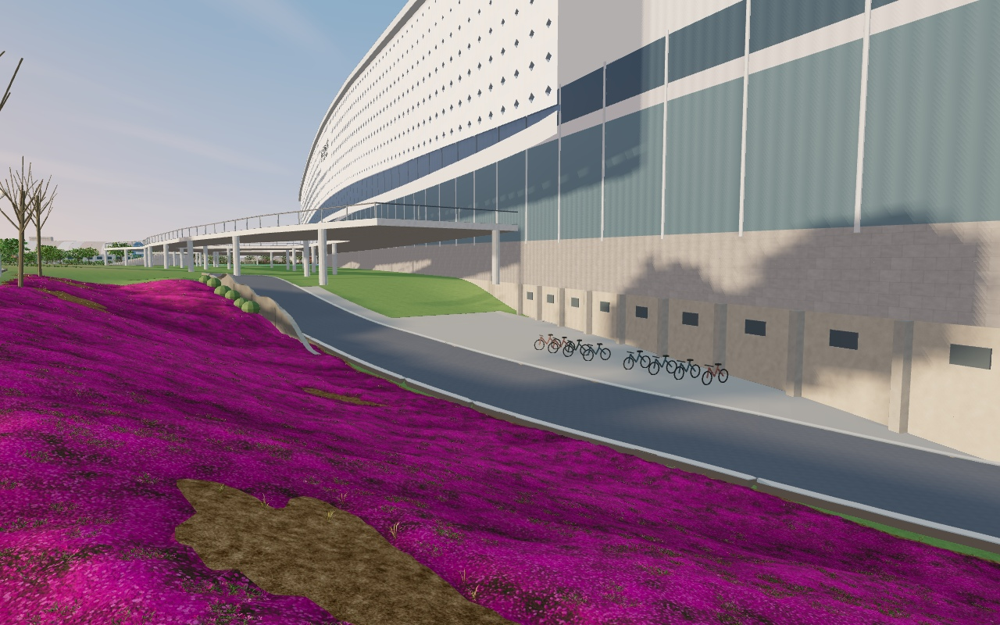
从接近草尖的高度看叶鞘与弯曲叶片，再进入模型沿园路查看。
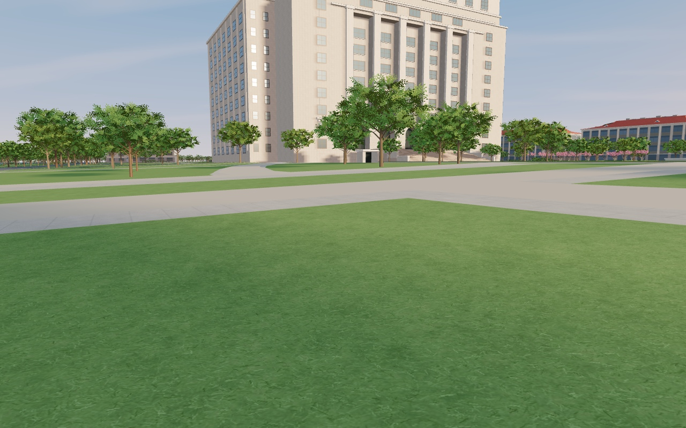
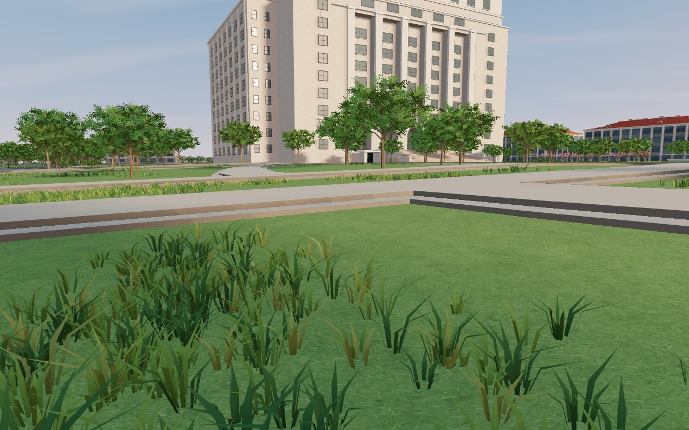